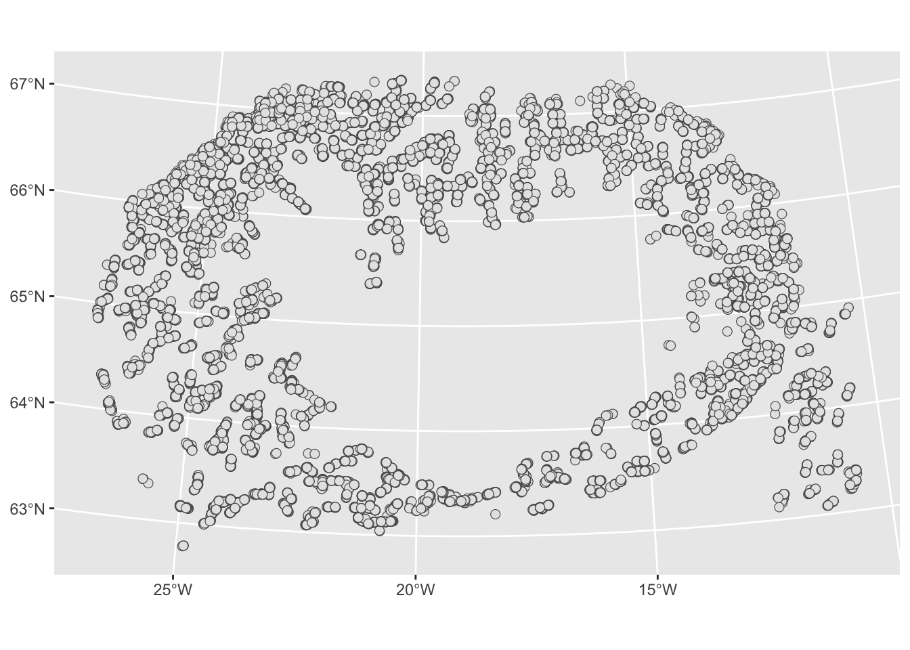
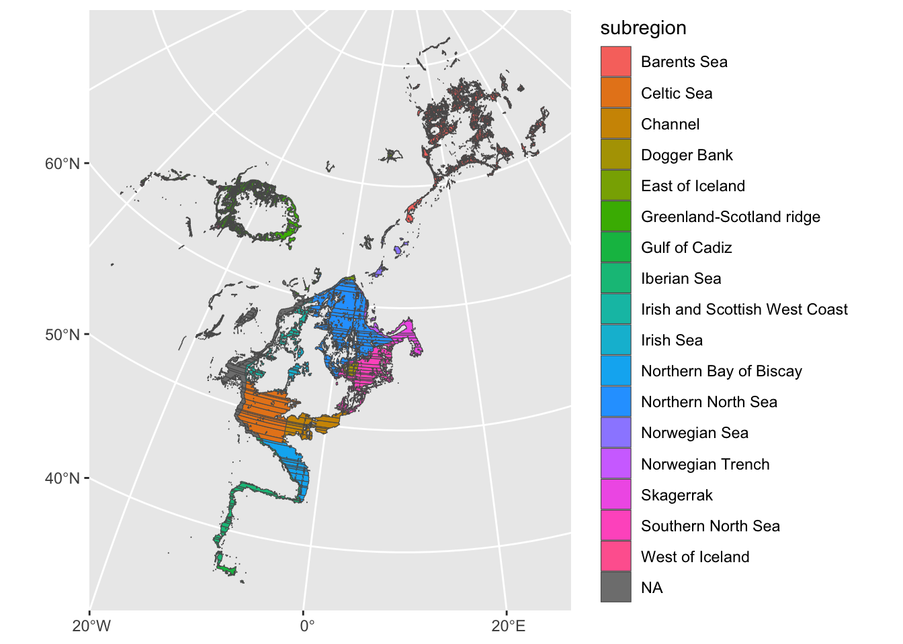

library(tidyverse)
library(sf)
library(terra)R and QGIS
R and QGIS are complementary tools, and many practitioners use both in the same workflow. QGIS excels at interactive, exploratory work: visually inspecting data, digitising features, and quick one-off queries. R excels at reproducible, scripted analysis that can be run end-to-end by anyone with the same data. There is no need to choose between them.
This chapter covers three ways to connect the two: simple file exchange, calling QGIS processing algorithms directly from R, and accessing GRASS GIS through R.
File exchange
The simplest and most reliable way to combine R and QGIS in a workflow is to write files from R that QGIS can open, and to read files prepared in QGIS back into R.
GeoPackage (.gpkg) is the recommended format for this. It is an open standard supported natively by both tools, stores multiple layers in a single file, and avoids the limitations of shapefiles. GeoTIFF (.tif) is the equivalent for rasters.
TipOrganise your project folders clearly
A simple convention that works well: keep a qgis/ folder for layers you create or edit interactively in QGIS, and an output/ folder for layers produced by your R scripts. Reading from qgis/ and writing to output/ keeps the direction of data flow obvious.
# Calling QGIS algorithms from R: qgisprocess
The qgisprocess package (Dunnington et al.) lets you run QGIS processing algorithms directly from an R script, passing sf and terra objects as inputs and getting results back as R objects. This is the current recommended approach for tight R–QGIS integration.
It requires a local QGIS installation (version 3.14 or later), and it wraps the qgis_process command-line tool that QGIS provides. All providers available in your QGIS installation are accessible: native QGIS algorithms, GDAL, GRASS, and SAGA.
Configuring qgisprocess
install.packages("qgisprocess")
The downloaded binary packages are in
/var/folders/ms/tz_yp8bn7y76txqjyzydcb5r0000gp/T//Rtmp3rWhSP/downloaded_packageslibrary(qgisprocess)
# Point to qgis_process in a Mac
options(qgisprocess.path = "/Applications/QGIS-4.0.1.app/Contents/MacOS/qgis_process")
# In Windows is a bat file commonly found at a location like this:
# C:\Program Files\QGIS 3.x\bin\qgis_process-qgis.bat
qgis_configure()Checking your setup
# Verify that qgisprocess can find your QGIS installation
qgis_path()[1] "/Applications/QGIS-4.0.1.app/Contents/MacOS/qgis_process"qgis_version()[1] "4.0.1-Norrköping"Discovering available algorithms
# List all available algorithms
qgis_algorithms()# A tibble: 756 × 25
provider provider_title algorithm algorithm_id algorithm_title
<chr> <chr> <chr> <chr> <chr>
1 3d QGIS (3D) 3d:tessellate tessellate Tessellate
2 gdal GDAL gdal:aspect aspect Aspect
3 gdal GDAL gdal:assignprojection assignproje… Assign project…
4 gdal GDAL gdal:buffervectors buffervecto… Buffer vectors
5 gdal GDAL gdal:buildvirtualraster buildvirtua… Build virtual …
6 gdal GDAL gdal:buildvirtualvector buildvirtua… Build virtual …
7 gdal GDAL gdal:cliprasterbyextent cliprasterb… Clip raster by…
8 gdal GDAL gdal:cliprasterbymaskla… cliprasterb… Clip raster by…
9 gdal GDAL gdal:clipvectorbyextent clipvectorb… Clip vector by…
10 gdal GDAL gdal:clipvectorbypolygon clipvectorb… Clip vector by…
# ℹ 746 more rows
# ℹ 20 more variables: provider_can_be_activated <lgl>,
# provider_is_active <lgl>, provider_long_name <chr>, provider_version <chr>,
# provider_warning <chr>, can_cancel <lgl>, deprecated <lgl>, group <chr>,
# has_known_issues <lgl>, help_url <chr>, requires_matching_crs <lgl>,
# short_description <chr>, tags <list>, default_raster_file_format <chr>,
# default_raster_file_extension <chr>, default_vector_file_extension <chr>, …# Search by keyword
qgis_algorithms() |>
filter(grepl("buffer", algorithm, ignore.case = TRUE)) |>
select(provider, algorithm, algorithm_title)# A tibble: 12 × 3
provider algorithm algorithm_title
<chr> <chr> <chr>
1 gdal gdal:buffervectors Buffer vectors
2 gdal gdal:onesidebuffer One side buffer
3 grass grass:r.buffer r.buffer
4 grass grass:r.buffer.lowmem r.buffer.lowmem
5 grass grass:v.buffer v.buffer
6 native native:buffer Buffer
7 native native:bufferbym Variable width buffer (by M value)
8 native native:multiringconstantbuffer Multi-ring buffer (constant distance)
9 native native:singlesidedbuffer Single sided buffer
10 native native:taperedbuffer Tapered buffers
11 native native:wedgebuffers Create wedge buffers
12 qgis qgis:variabledistancebuffer Variable distance buffer # Get the full documentation for one algorithm
qgis_show_help("native:buffer")Buffer (native:buffer)
----------------
Description
----------------
Computes a buffer area for all the features in an input layer, using a fixed or dynamic distance.
This algorithm computes a buffer area for all the features in an input layer, using a fixed or dynamic distance.
The segments parameter controls the number of line segments to use to approximate a quarter circle when creating rounded offsets.
The end cap style parameter controls how line endings are handled in the buffer.
The join style parameter specifies whether round, miter or beveled joins should be used when offsetting corners in a line.
The miter limit parameter is only applicable for miter join styles, and controls the maximum distance from the offset curve to use when creating a mitered join.
----------------
Notes
----------------
- This algorithm may drop existing primary keys or FID values and regenerate them in output layers, depending on the input parameters.
----------------
Arguments
----------------
INPUT: Input layer
Argument type: source
Acceptable values:
- Path to a vector layer
DISTANCE: Distance
Default value: 10
Argument type: distance
Acceptable values:
- A numeric value
- field:FIELD_NAME to use a data defined value taken from the FIELD_NAME field
- expression:SOME EXPRESSION to use a data defined value calculated using a custom QGIS expression
SEGMENTS: Segments
Default value: 5
The segments parameter controls the number of line segments to use to approximate a quarter circle when creating rounded offsets.
Argument type: number
Acceptable values:
- A numeric value
- field:FIELD_NAME to use a data defined value taken from the FIELD_NAME field
- expression:SOME EXPRESSION to use a data defined value calculated using a custom QGIS expression
END_CAP_STYLE: End cap style
Default value: 0
Argument type: enum
Available values:
- 0: Round
- 1: Flat
- 2: Square
Acceptable values:
- Number of selected option, e.g. '1'
- Comma separated list of options, e.g. '1,3'
JOIN_STYLE: Join style
Default value: 0
Argument type: enum
Available values:
- 0: Round
- 1: Miter
- 2: Bevel
Acceptable values:
- Number of selected option, e.g. '1'
- Comma separated list of options, e.g. '1,3'
MITER_LIMIT: Miter limit
Default value: 2
Argument type: number
Acceptable values:
- A numeric value
- field:FIELD_NAME to use a data defined value taken from the FIELD_NAME field
- expression:SOME EXPRESSION to use a data defined value calculated using a custom QGIS expression
DISSOLVE: Dissolve result
Default value: false
Argument type: boolean
Acceptable values:
- 1 for true/yes
- 0 for false/no
- field:FIELD_NAME to use a data defined value taken from the FIELD_NAME field
- expression:SOME EXPRESSION to use a data defined value calculated using a custom QGIS expression
SEPARATE_DISJOINT: Keep disjoint results separate
Default value: false
If checked, then any disjoint parts in the buffer results will be output as separate single-part features.
Argument type: boolean
Acceptable values:
- 1 for true/yes
- 0 for false/no
- field:FIELD_NAME to use a data defined value taken from the FIELD_NAME field
- expression:SOME EXPRESSION to use a data defined value calculated using a custom QGIS expression
OUTPUT: Buffered
Argument type: sink
Acceptable values:
- Path for new vector layer
----------------
Outputs
----------------
OUTPUT: <outputVector>
BufferedA worked example: buffering survey stations
# Load survey stations
stations <- read_sf("./data/is_smb_stations.csv") |>
st_as_sf(coords=c("lon1","lat1"),crs=4326) |>
st_transform(3057) # reproject for buffering
# Run the QGIS buffer algorithm
result <- qgis_run_algorithm(
algorithm = "native:buffer",
INPUT = stations,
DISTANCE = 5000, # 5 km buffer, in the CRS units (metres)
SEGMENTS = 16,
DISSOLVE = FALSE
)
# Convert the output back to an sf object
station_buffers <- sf::read_sf(qgis_extract_output(result, "OUTPUT"))
# Inspect
glimpse(station_buffers)Rows: 19,846
Columns: 27
$ id <chr> "44929", "44928", "44927", "44926", "44925", "44922", "…
$ date <chr> "1990-03-16", "1990-03-16", "1990-03-16", "1990-03-16",…
$ year <chr> "1990", "1990", "1990", "1990", "1990", "1990", "1990",…
$ vid <chr> "1307", "1307", "1307", "1307", "1307", "1307", "1307",…
$ tow_id <chr> "670-15", "670-13", "670-12", "670-1", "670-2", "720-1"…
$ t1 <chr> "1990-03-16T05:05:00Z", "1990-03-16T07:48:00Z", "1990-0…
$ t2 <chr> "1990-03-16T06:05:00Z", "1990-03-16T08:51:00Z", "1990-0…
$ lon2 <chr> "-20.73166666666667", "-20.5335", "-20.290833333333335"…
$ lat2 <chr> "66.59166666666667", "66.57583333333334", "66.6155", "6…
$ ir <chr> "62C9", "62C9", "62C9", "62C9", "62D0", "63C9", "63C9",…
$ ir_lon <chr> "-20.5", "-20.5", "-20.5", "-20.5", "-19.5", "-20.5", "…
$ ir_lat <chr> "66.75", "66.75", "66.75", "66.75", "66.75", "67.25", "…
$ z1 <chr> "297", "302", "205", "88", "129", "249", "332", "244", …
$ z2 <chr> "330", "314", "291", "117", "172", "307", "360", "256",…
$ temp_s <chr> "1.1", "1.1", "1", "1.1", "0.9", "1.3", "1.2", "1.2", "…
$ temp_b <chr> "NA", "1", "NA", "1", "1.1", "1", "-0.5", "0.9", "0.9",…
$ speed <chr> "4", "3.8", "3.2", "4", "4.1", "4.1", "3.9", "3.8", "3.…
$ duration <chr> "60", "63", "74", "60", "59", "59", "61", "64", "62", "…
$ towlength <chr> "4", "4", "4", "4", "4", "4", "4", "4", "4", "4", "4", …
$ horizontal <chr> "NA", "NA", "NA", "NA", "NA", "NA", "NA", "NA", "NA", "…
$ verical <chr> "2", "3", "2.4", "2.6", "NA", "NA", "NA", "2.2", "2", "…
$ wind <chr> "15", "15", "15", "15", "12", "9", "9", "7", "7", "5", …
$ wind_direction <chr> "5", "5", "5", "9", "9", "9", "9", "9", "9", "14", "14"…
$ bormicon <chr> "3", "3", "3", "3", "3", "3", "3", "3", "3", "3", "3", …
$ oldstrata <chr> "34", "34", "34", "34", "34", "33", "36", "33", "33", "…
$ newstrata <chr> "31", "31", "31", "32", "32", "18", "37", "18", "18", "…
$ geom <MULTIPOLYGON [m]> MULTIPOLYGON (((429219.9 67..., MULTIPOLYG…# Quick plot
ggplot() +
geom_sf(data=station_buffers |> st_geometry())
Note
The DISTANCE parameter is always in the units of the input layer’s CRS. Reproject to a projected CRS (metres) before buffering if your data are in degrees.
Another example: dissolving polygons by attribute
qgis_show_help("native:dissolve")Dissolve (native:dissolve)
----------------
Description
----------------
Combines features of a vector layer into new features, optionally grouped by common attributes.
This algorithm takes a vector layer and combines their features into new features. One or more attributes can be specified to dissolve features belonging to the same class (having the same value for the specified attributes), alternatively all features can be dissolved in a single one.
All output geometries will be converted to multi geometries. In case the input is a polygon layer, common boundaries of adjacent polygons being dissolved will get erased.
If enabled, the optional "Keep disjoint features separate" setting will cause features and parts that do not overlap or touch to be exported as separate features (instead of parts of a single multipart feature).
----------------
Notes
----------------
- This algorithm drops existing primary keys or FID values and regenerates them in output layers.
----------------
Arguments
----------------
INPUT: Input layer
Argument type: source
Acceptable values:
- Path to a vector layer
FIELD: Dissolve field(s) (optional)
Argument type: field
Acceptable values:
- The name of an existing field
- ; delimited list of existing field names
SEPARATE_DISJOINT: Keep disjoint features separate
Default value: false
Argument type: boolean
Acceptable values:
- 1 for true/yes
- 0 for false/no
- field:FIELD_NAME to use a data defined value taken from the FIELD_NAME field
- expression:SOME EXPRESSION to use a data defined value calculated using a custom QGIS expression
OUTPUT: Dissolved
Argument type: sink
Acceptable values:
- Path for new vector layer
----------------
Outputs
----------------
OUTPUT: <outputVector>
Dissolvedospar.sr <- read_sf("./data/ospar.gpkg")
sf_use_s2(FALSE)
sq <- read_sf("./data/OSPAR_intensity_Otter_2015.gpkg") |>
st_join(ospar.sr) |>
select(subregion) |>
st_transform(3035)
sf_use_s2(TRUE)
result <- qgis_run_algorithm(
algorithm = "native:dissolve",
INPUT = sq,
FIELD = "subregion"
)
sq_dissolved <- read_sf(qgis_extract_output(result, "OUTPUT"))
ggplot()+
geom_sf(data=sq_dissolved, aes(fill=subregion))
Chaining algorithms
qgisprocess results can be passed directly as inputs to the next algorithm without converting back to sf at each step:
# Buffer, then dissolve, in one chain
buffered <- qgis_run_algorithm("native:buffer",
INPUT = stations,
DISTANCE = 5000)
dissolved <- qgis_run_algorithm("native:dissolve",
INPUT = qgis_extract_output(buffered, "OUTPUT"))
final <- read_sf(qgis_extract_output(dissolved, "OUTPUT"))
WarningPackage versions
qgisprocess stabilised on CRAN in 2023 and is the successor to the older RQGIS and RQGIS3 packages, which are no longer maintained. If you encounter references to RQGIS in older tutorials or Stack Overflow answers, use qgisprocess instead.
Check the current version and documentation at: https://r-spatial.github.io/qgisprocess/
GRASS GIS from R: rgrass
GRASS GIS is a powerful open-source GIS that includes algorithms not available in QGIS or R, particularly for terrain analysis (watershed delineation, viewshed, least-cost paths) and advanced raster processing. The rgrass package provides a direct interface between R and GRASS.
qgisprocess can also access GRASS algorithms if GRASS is installed alongside QGIS, so for many purposes you do not need rgrass directly. Use rgrass when you need fine-grained control over the GRASS environment, or when you are working with workflows built around GRASS natively.
# install.packages("rgrass")
library(rgrass)
# Initialise a GRASS session (requires GRASS to be installed)
initGRASS(gisBase = "/usr/lib/grass82", # path to your GRASS installation
home = tempdir(),
override = TRUE)
# Write an sf object into the GRASS environment
write_VECT(my_sf, vname = "my_layer", v.in.ogr_flags = "overwrite")
# Run a GRASS command
execGRASS("v.buffer",
input = "my_layer",
output = "my_layer_buffered",
distance = 5000)
# Read the result back into R as an sf object
result <- read_VECT("my_layer_buffered")For most participants on this course, qgisprocess will be sufficient. The rgrass documentation is at https://rsbivand.github.io/rgrass/.
Choosing the right approach
| Situation | Recommended approach |
|---|---|
| Move a processed layer to QGIS for visual checking | Write GeoPackage with write_sf() |
| Use a QGIS-prepared layer in R | Read GeoPackage with read_sf() |
| Run a specific QGIS algorithm inside a script | qgisprocess |
| Need GRASS algorithms (watersheds, terrain) | qgisprocess with GRASS provider, or rgrass |
| Building a fully reproducible pipeline | R throughout; QGIS for visual QC only |
TipA practical rule of thumb
Use QGIS for interactive exploration and visual checks. Use R for anything you need to run more than once, share with collaborators, or include in a report. File exchange via GeoPackage always works. qgisprocess is the best option when you specifically need a QGIS algorithm inside a scripted workflow.
Further reading
- qgisprocess package documentation — full reference with vignettes and algorithm examples.
- QGIS documentation: Processing framework — describes all native algorithms accessible via
qgisprocess. - rgrass documentation — interface to GRASS GIS from R.
- Geocomputation with R, Chapter 9: Bridges to GIS software — a detailed treatment of R–QGIS–GRASS–SAGA integration.